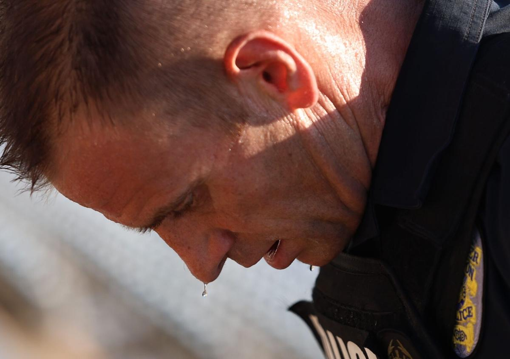

For those who answer the call
Honoring their courage. Supporting their strength.
Steps of Valor is building support for the people who protect our communities—and for the families who carry that service with them.

Why we exist
First responders carry what most people never see.
Every day, first responders answer the call without hesitation, placing themselves in harm’s way to protect families, communities, and complete strangers. They face physical and emotional challenges that can remain long after an emergency has ended.
The cumulative impact of that service can affect their mental health, their well-being, and the people closest to them. While they dedicate their lives to helping others through difficult moments, finding support for themselves can still be hard.
Our mission
It is our turn to serve those who serve us.
Our mission is to expand access to mental-health resources, peer support, wellness programs, and community assistance shaped around the realities of first-responder service.
We work to break the stigma around mental health and reinforce a simple truth: asking for help is a sign of strength. This mission includes firefighters, law-enforcement officers, EMS professionals, dispatchers, emergency responders, and their families.
More about Steps of ValorMental health
Seeking help is a sign of strength.
First responders deserve support that understands the culture, pressure, and cumulative stress of the work.
For immediate emotional support, call or text 988 or use the 988 Lifeline chat. In an immediate emergency, call 911.
Visit the 988 LifelineSeptember 11, 2026
The 9/11 Memorial Stair Climb
The Memorial Stair Climb brings first responders and the community together to remember the lives lost on September 11 and honor those who ran toward danger.
- Date
- September 11, 2026
- Location
- UTA Maverick Stadium
- Check-in
- 6:45 AM
- Climb
- 8:03 AM
Stand with those who serve
Help build the next chapter of Steps of Valor.
Your gift helps sustain the Memorial Stair Climb and strengthen support for first responders and their families.